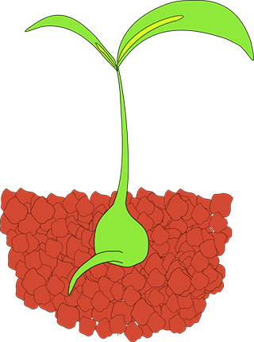
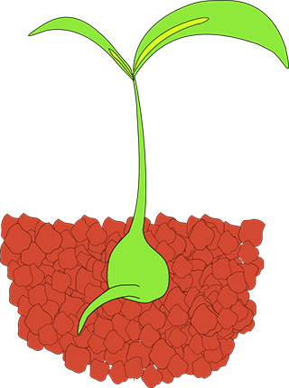

Plants and vegetables start from seeds. A seed is made up of three parts; embryo, endosperm and seed coat. The embryo is a miniature plant in a suspended state of development. It contains its own food supply, which is the endosperm. The hard outer covering is the seed coat. It protects the seed from the elements. Once water enters the seed, the germination process begins. Bean plants begin with seeds. There are a variety of bean types and a seed for each kind of bean.